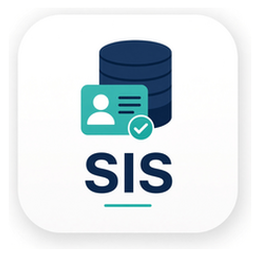
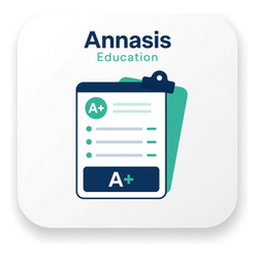
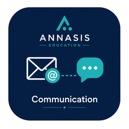
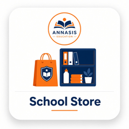
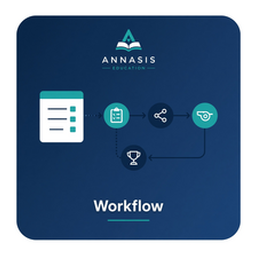
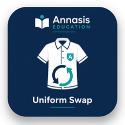
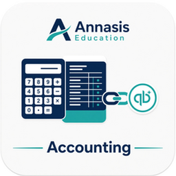

Where it matters
Success broken down.
Empower Student success in the classroom and portal. Empower Parent success on the school’s own site and SMS. Empower Faculty success without another login. Empower School success when one foundation covers the operation — not a stack of separate tools.
Most private-school operations start here: Core SIS (family record, Admissions, re-enrollment, Attendance, schedules, Gradebook, report cards, transcripts, Parent portal and communication, health records and medical notes, and discipline log), then Power-ups — tuition, billing & fundraising, school store, event registration, athletics eligibility & workflows, uniform exchange, and QuickBooks accounting. Your campus may run more on top of this base over time.
Where most SIS platforms fall short — and where ANNASIS is built to be different — is putting event registration, school ecommerce, athletics and sports, forms and approval workflows, the school store, and uniform exchange in the same system. Some peers cover one or two of those jobs; few cover all of them without a bolt-on stack.




Core SIS
One student and family system — the family record, Admissions, re-enrollment, Attendance, class and bell schedules, Gradebook, report cards, transcripts, health records and medical notes, the Parent portal and communication, and the discipline log. Not a gradebook with hidden or add-on finance costs later.
- Family record — the family (household) is the unit, with demographics, emergency contacts, and roles, including a second campus with multi-campus support.
- Admissions & re-enrollment — inquiry, online application, enrollment, and re-enrollment in one Admissions pipeline with configurable application forms. Embed Apply on the website you already have; enrollment packets can collect waivers and consents.
- Attendance, class schedule & bell schedule — Attendance and Scheduler keep the office current on where Students are during the day.
- Gradebook, report cards & transcripts — online Gradebook with assignments, rubrics, progress reports, report cards, transcripts, and GPA. Report cards publish from what Faculty already entered.
- Health records & medical notes — immunizations, allergies, medications, medical notes, and emergency-card details the office and nurse need. Athletics physicals that expire use the same workflows as eligibility and clearance — nurse, coach, and office look at one Student.
- Parent portal & communication — Parents and Students see the same academic record in the family portal, with no separate parent grade portal and no required app. Email and text announcements, plus email and SMS messaging to groups, teams, and lists, reach Parents, Students, and Faculty on the student and family system.
- Discipline log — incident and discipline logs stay on the student system with emergency contacts.
Also on the same record: family directory, staff roster, Student locator, and reporting — analytics and dashboards give the office a clear view without exporting to five spreadsheets. Staff see one pipeline instead of a form tool plus a spreadsheet plus the SIS.
Tuition, Billing & Fundraising
Tuition management: payment plans, invoices, incidental billing, online payments, and family-portal pay — on the same family wallet as giving.
Giving features shown to improve giving for our customers — on the same family system, not a separate fundraising site:
- One-time and recurring giving — offered during every transaction.
- Round-up campaigns — to one or multiple funds, including optional round-up on school store purchases.
- Giving leaderboards — rankings by class, team, or campaign, the way a school posts a drive, not a pressure pitch.
- Goal meters — dollars raised and percent to goal on a campaign, student, team, or event page.
- Sponsor invites — families, staff, and others invite sponsors for students, events, and similar participants.
Where paying and giving meet — One-time and recurring gifts appear right at checkout, and every dollar lands on the same family record your office already uses.

School Store
Uniforms, books, trips, and fees — school ecommerce on the family system, not a volunteer Shopify the office reconciles at night.
Every transaction, a chance to give — with our optional fundraising Power-up, families who buy from the store see a simple way to support the school’s goals in the same moment.
Store purchases land on the family beside tuition & billing. No second shop login to reconcile.
See Store →
Event Registration
Sports, plays, camps, enrichment, extracurricular programs, games, and fundraisers — online registration and payment without add-ons and high fees.
Stop Eventbrite leakage. Event registration embeds on the school site, can collect waivers and consents, and stays on the same student and family system as tuition & billing.
Every transaction, a chance to give — with our optional fundraising Power-up, families who register for events see a simple way to support the school’s goals in the same moment.
See Events →

Athletics Eligibility & Workflows
Athletics eligibility and clearance with waivers, consents, and serial or parallel approval workflows. Reusable for enrollment packets and purchase approval — without a bolt-on forms product like FinalForms.
Clearance sits on the same student and family system as fees and roster — configured by the school, not another vendor beside your SIS.

Uniform Exchange
A unique family-portal uniform exchange: Parents publish uniforms for other Parents or Students to exchange or purchase. No middleman required.
Used uniforms stay in the community — not a Facebook thread Faculty and the office cannot see.

Accounting (QuickBooks)
Accounting integration: the school keeps QuickBooks as books of record. ANNASIS posts operations.
We do not replace the accountant’s general ledger. We stop the office from typing the same family three times.